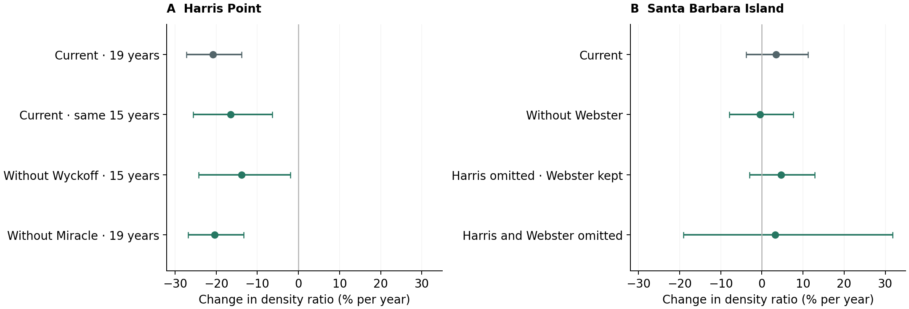
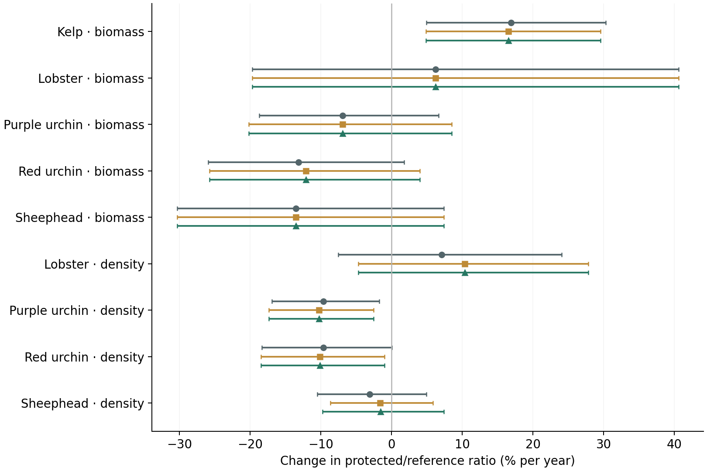

November 3, 2026 · Sensitivities only; primary analysis and paper unchanged.
Findings, methods and limitations · Draft note to Scott (not sent) · Current decisions
| scenario | supported_years | lost_supported_years | new_supported_years | fitted_histories | before_after | post_only |
|---|---|---|---|---|---|---|
| Current review | 2939 | 0 | 0 | 162 | 62 | 100 |
| Omit Webster’s Arch | 2939 | 0 | 0 | 162 | 62 | 100 |
| Omit Miracle Mile | 2939 | 0 | 0 | 162 | 62 | 100 |
| Omit Wyckoff Ledge | 2737 | 202 | 0 | 156 | 57 | 99 |
| Omit all flagged references | 2722 | 217 | 0 | 155 | 57 | 98 |

Conditional estimates and 95% intervals. Current means the integrated review. Harris uses 19 or 15 post-protection years as labeled; SBI uses 20. The common-year comparisons separate coverage loss from reference changes. These are relative density trends, not before–after protection effects.

Gray circles: current full cohort. Ochre squares: current references on the combined test’s cohort. Green triangles: combined omission. Conditional 95% intervals; no before–after effects plotted.
| Variable | Current review | Current references, combined-test cohort | Omit all flagged references |
|---|---|---|---|
| M. franciscanus Bio | -13.2% (-26.0, +1.8) | -12.1% (-25.8, +4.0) | -12.1% (-25.8, +4.0) |
| M. franciscanus Den | -9.6% (-18.3, +0.0) | -10.2% (-18.5, -1.0) | -10.2% (-18.5, -1.0) |
| M. pyrifera Bio | +16.9% (+4.9, +30.3) | +16.5% (+4.8, +29.5) | +16.5% (+4.8, +29.5) |
| P. interruptus Bio | +6.2% (-19.7, +40.6) | +6.2% (-19.7, +40.6) | +6.2% (-19.7, +40.6) |
| P. interruptus Den | +7.1% (-7.6, +24.0) | +10.4% (-4.7, +27.8) | +10.4% (-4.7, +27.8) |
| S. pulcher Bio | -13.5% (-30.3, +7.4) | -13.5% (-30.3, +7.4) | -13.5% (-30.3, +7.4) |
| S. pulcher Den | -3.1% (-10.5, +4.9) | -1.7% (-8.6, +5.9) | -1.6% (-9.8, +7.4) |
| S. purpuratus Bio | -6.9% (-18.7, +6.6) | -6.9% (-20.2, +8.5) | -6.9% (-20.2, +8.5) |
| S. purpuratus Den | -9.7% (-16.9, -1.7) | -10.3% (-17.4, -2.6) | -10.3% (-17.4, -2.6) |
The flat-baseline lobster estimate rises from +229% (95% interval −40 to +1695) to +424% (+77 to +1451), entirely through removing Harris Point. The pre-trend sensitivity remains very uncertain: +158% (−97 to +19050). Do not treat this as robust causal evidence or choose exclusions from the result.
AR and zero-variance boundary flags remain. Read the methods and limitations before interpreting the intervals.